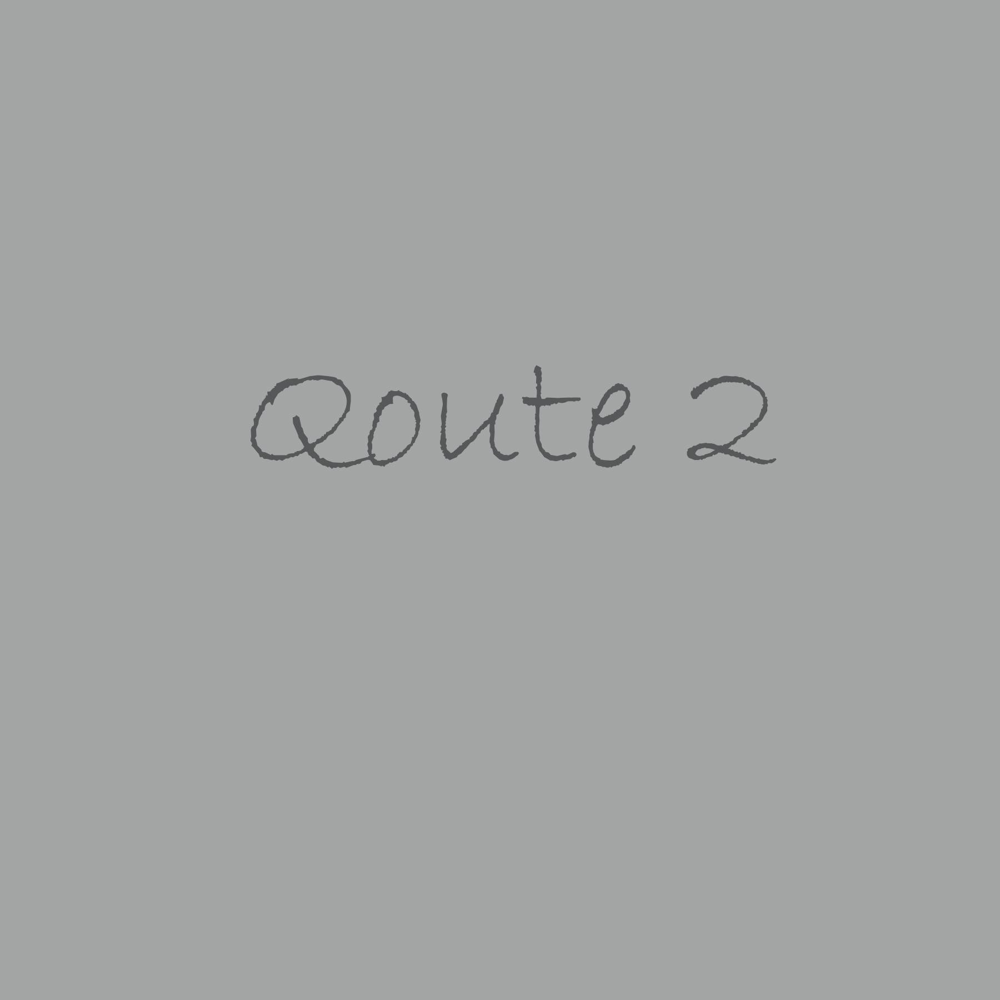
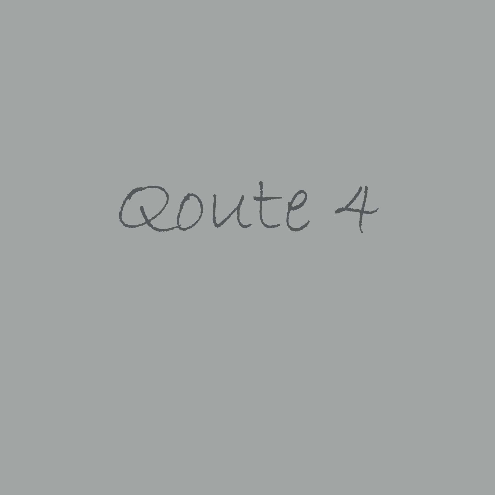
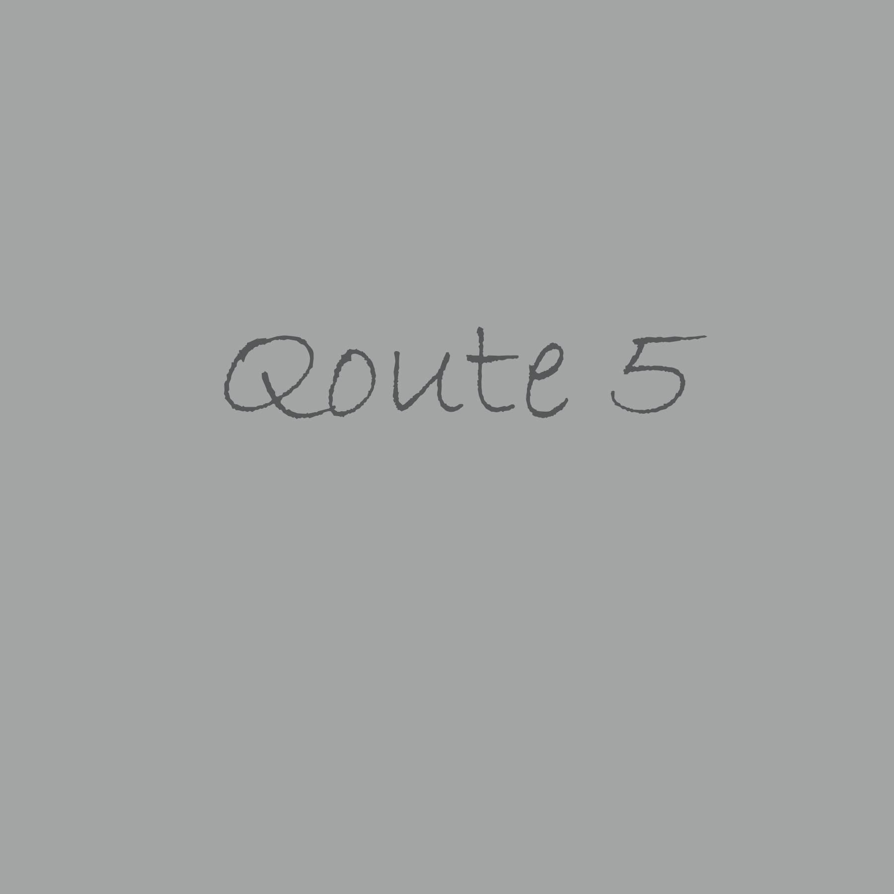

I actually consider myself as totally privileged to be able to serve science and medicine in a global fashion, because science and medicine know no boundaries.
Magdy Yacoub

Leaving Egypt and the people I loved so much, and the environment I liked, was definitely worth it, because I also have great love for medicine and science.
Magdy Yacoub
I have a charity called the Chain Of Hope, where we target children from poor areas where heart surgery is not available, and we offer our services.
Magdy Yacoub

My dad was a surgeon in Egypt. He was a general surgeon. As a little boy I always admired what he was doing, and I wanted to do surgery.
Magdy Yacoub

I don't have any regrets. I consider myself really privileged to belong to medicine and do what I do. I would do it all again.
Magdy Yacoub
As a heart surgeon I am on constant call, and when not researching or giving lectures, I like to be with my family.